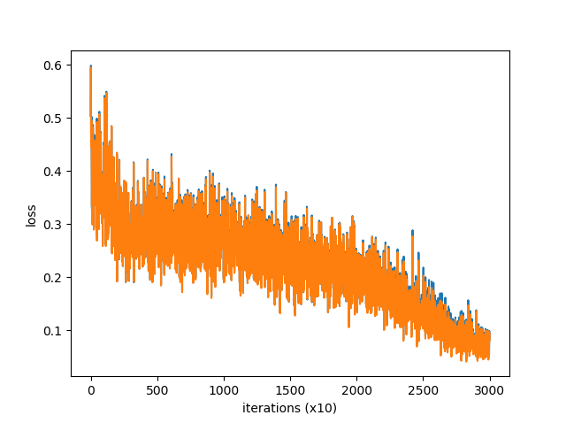
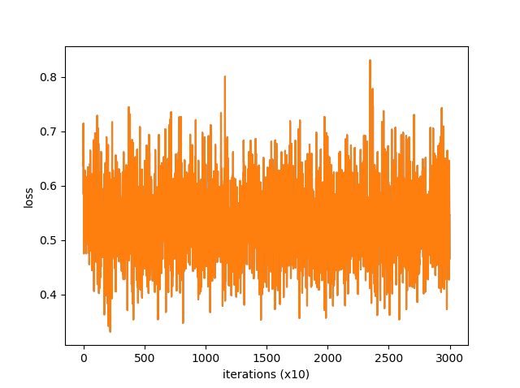
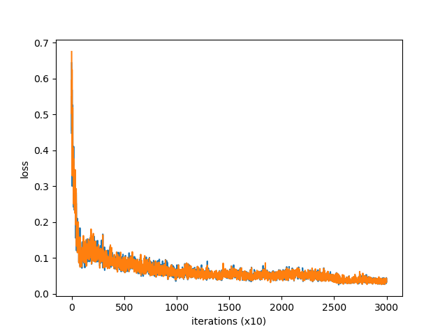
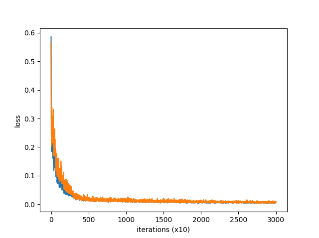

機械学習の練習のため競争的な学習の実験をしてみた
単純な2入力2出力(入出力いずれもアナログ値)の関数の学習を3層のニューラルネットワークで行う。ただし、別の初期値を持つ同じモデル二つについて、学習の際は、正解の出力がわからないが、その二つのモデルのうちどちらがより正解に近いか、すなわち、その「勝者」がどちらかだけはわかるという設定とする。
Ptyhon を用いた実験により、初期値の与え方が普通とちょっと違うのもになったが、そのような設定でもちゃんと学習が進むことが確かめられた。
なお、それを便宜的に「競争的な学習」と私は呼んでいるが、Wikipedia にある "Competitive Learning" (競合学習) とは別物のはずである。
■はじめに
Python による機械学習を使って、おもちゃの自動車の自動運転シミュレーションを実験的に実装できないかとこのところ考えている。その過程で、結局、それを使う考えは捨てたのだが、「勝者」だけがわかって数値がわからない場合でも学習ができるかという研究課題を思いついた。
Python の経験の浅い私が、まず最初に解くべき機械学習の課題として、マイルストーンとして、これはふさわしい問題ではないかと思い、Python の機械学習の練習もかねて実験してみることにした。
今回は、それを確かめる Python プログラムの TensorFlow を使ったバージョンとそうでないバージョンの二つを公開する。このプログラムに致る前に、競争的でない普通の学習をするプログラムも作ったが、それは今回は割愛した。
なお、TensorFlow を使ったバージョンは、Aurelien Geron『scikit-learn と TensorFlow による実践機械学習』を参考にし、使っていないバージョンは、斎藤康毅『ゼロから作る Deep Learning』シリーズを参考にした。
■設定
2入力2出力関数を学習する。入力 x1, x2 は -1.0 から 1.0 の一様乱数で発生させる。正解の出力 y1, y2 は、y1 = x1 ** 2 + x2 ** 2, y2 = 2 * x1 * x2 である。
3層の Affine レイヤーを使い、デフォルトでは活性化関数に ReLU を使い、恒等関数に対する平均二乗誤差で損失を求める。最適化は凝ったことはせず、 SGD (確率的勾配降下法, Stochastic Gradient Descent) を使う。
二つのモデルを A と B とする。x1, x2 に対する モデル A の予想を pA1, pA2 とし、モデル B の予想を pB1, pB2 とする。dA = (y1 - pA1) ** 2 + (y2 - pA2) ** 2, dB = (y1 - pB1) ** 2 + (y2 - pB2) ** 2 について、dA と dB を比較して少ない方を勝者とする。
仮に B が勝者となったとしよう。そのとき、本当の正解である y1, y2 の代わりに pB1, pB2 を正解とみなして A と B ともに学習する。ただし、B に関しては学習すべきものと予想が一致しているので、実質的な学習は起こらない。
さらに、オプションとして、不正解である pA1, pA2 について「負の学習」を試みてよいことにする。これは後述のソースを読んだほうがわかりやすいだろう。ソースにおいて negative_learning_rate はマイナスの値になっている。
■ソース
TensorFlow を使わないバージョンのソースを途中から切り出すとだいたい次のようになる。
model1 = ThreeLayerNet(input_size=input_size, hidden_size=hidden_size,
output_size=output_size)
model2 = ThreeLayerNet(input_size=input_size, hidden_size=hidden_size,
output_size=output_size)
optimizer = SGD(lr=learning_rate)
noptimizer = SGD(lr=negative_learning_rate)
total_loss1 = 0
total_loss2 = 0
loss_count = 0
loss_list1 = []
loss_list2 = []
for epoch in range(max_epoch):
for iters in range(max_iters):
batch_x = np.random.uniform(-1.0, 1.0, (batch_size, input_size))
batch_t = answer_of_input(batch_x)
p1 = model1.predict(batch_x)
p2 = model2.predict(batch_x)
d = np.sum(np.square(p1 - batch_t), axis=1, keepdims=True) \
< np.sum(np.square(p2 - batch_t), axis=1, keepdims=True)
t1 = np.where(d, p1, p2)
t2 = np.where(~d, p1, p2)
ploss1 = model1.calc_loss(p1, t1)
Ploss2 = model2.calc_loss(p2, t1)
model1.backward()
model2.backward()
optimizer.update(model1.params, model1.grads)
optimizer.update(model2.params, model2.grads)
nloss1 = model1.calc_loss(p1, t2)
nloss2 = model2.calc_loss(p2, t2)
model1.backward()
model2.backward()
noptimizer.update(model1.params, model1.grads)
noptimizer.update(model2.params, model2.grads)
loss1 = model1.calc_loss(p1, batch_t)
loss2 = model2.calc_loss(p2, batch_t)
total_loss1 += loss1
total_loss2 += loss2
loss_count += 1
if (iters + 1) % 10 == 0:
avg_loss1 = total_loss1 / loss_count
avg_loss2 = total_loss2 / loss_count
print('| epoch %d | iter %d / %d | loss %.2f, %.2f'
% (epoch + 1, iters + 1, max_iters, avg_loss1, avg_loss2))
loss_list1.append(avg_loss1)
loss_list2.append(avg_loss2)
total_loss1, total_loss2, loss_count = 0, 0, 0
『ゼロから作る Deep Learning』シリーズでは、predict したあと calc_loss する一連の動きが forward に相当する。ちなみに、はじめ、 model?.backward() を忘れていて学習がまったく進まず焦ったりした。
np.where の部分を説明すると、d が batch_size 分、勝者が True になっているベクトルが入っている。i 個目が True であれば i 個目のバッチは p1 (すなわちモデル A)から取り、False であれば p2 (すなわち B)から取る。
TensorFlow を使うバージョンは次のようになる。ただし、注意点として、 TensorFlow 版とそうでない版では、変数名の付け方が違うことを挙げねばならない。具体的には、predict した値を TensorFlow 版は outputs と呼び、そうでない版は y と呼ぶ。また、正解を TensorFlow 版では y と呼び、そうでない版は t と呼んでいる。y が両者で意味が違う。元となったソースの違いからそれらが生じた。
activation = tf.nn.relu
with tf.name_scope("dnn1"):
hidden1 = neuron_layer(X, hidden_size, "hidden1",
activation=activation)
hidden2 = neuron_layer(hidden1, hidden_size, "hidden2",
activation=activation)
outputs1 = neuron_layer(hidden2, output_size, "outputs")
with tf.name_scope("dnn2"):
hidden1 = neuron_layer(X, hidden_size, "hidden1",
activation=activation)
hidden2 = neuron_layer(hidden1, hidden_size, "hidden2",
activation=activation)
outputs2 = neuron_layer(hidden2, output_size, "outputs")
with tf.name_scope("loss1"):
loss1 = tf.losses.mean_squared_error(labels=y, predictions=outputs1)
with tf.name_scope("loss2"):
loss2 = tf.losses.mean_squared_error(labels=y, predictions=outputs2)
d = tf.reduce_sum(tf.square(outputs1 - y), axis=1) \
< tf.reduce_sum(tf.square(outputs2 - y), axis=1)
y1 = tf.stop_gradient(tf.where(d, outputs1, outputs2))
y2 = tf.stop_gradient(tf.where(~d, outputs1, outputs2))
with tf.name_scope("ploss1"):
ploss1 = tf.losses.mean_squared_error(labels=y1, predictions=outputs1)
with tf.name_scope("ploss2"):
ploss2 = tf.losses.mean_squared_error(labels=y1, predictions=outputs2)
with tf.name_scope("nloss1"):
nloss1 = tf.losses.mean_squared_error(labels=y2, predictions=outputs1)
with tf.name_scope("nloss2"):
nloss2 = tf.losses.mean_squared_error(labels=y2, predictions=outputs2)
optimizer = tf.train.GradientDescentOptimizer(learning_rate=learning_rate)
noptimizer = tf.train.GradientDescentOptimizer(learning_rate=negative_learning_rate)
training_op1 = optimizer.minimize(ploss1)
training_op2 = optimizer.minimize(ploss2)
ntraining_op1 = noptimizer.minimize(nloss1)
ntraining_op2 = noptimizer.minimize(nloss2)
answer = answer_of_input(X)
init = tf.global_variables_initializer()
total_loss1 = 0
total_loss2 = 0
loss_count = 0
loss_list1 = []
loss_list2 = []
with tf.Session() as sess:
init.run()
for epoch in range(max_epoch):
for iters in range(max_iters):
X_val = np.random.uniform(-1.0, 1.0, (batch_size, input_size))
y_val = sess.run(answer, feed_dict={X: X_val})
loss1_val, loss2_val, _, _, _, _ \
= sess.run((loss1, loss2, training_op1, training_op2,
ntraining_op1, ntraining_op2),
feed_dict={X: X_val, y: y_val})
total_loss1 += loss1_val
total_loss2 += loss2_val
loss_count += 1
if (iters + 1) % 10 == 0:
avg_loss1 = total_loss1 / loss_count
avg_loss2 = total_loss2 / loss_count
print('| epoch %d | iter %d / %d | loss %.2f, %.2f'
% (epoch + 1, iters + 1, max_iters, avg_loss1, avg_loss2))
loss_list1.append(avg_loss1)
loss_list2.append(avg_loss2)
total_loss1, total_loss2, loss_count = 0, 0, 0
TensorFlow を使う注意点としては、「偏微分」をするために stop_gradient を使うことと、np.where と tf.where の条件部分の型が違うことが挙げられる。
■実験結果
まず、batch_size = 10, learning_rate = 0.1 に固定しておくものとする。最初は「負の学習」は使わない、すなわち、 negative_learning_rate = 0 にしておく。TensorFlow を使ったバージョンもそうでないバージョンも結果は同じなので、実行が速い、そうでないバージョンのほうで見ていく。
hidden_size = 7 でそこそこうまくいく。
% python comp_learn_1.py
| epoch 1 | iter 10 / 100 | loss 0.33, 0.36
| epoch 1 | iter 20 / 100 | loss 0.27, 0.33
| epoch 1 | iter 30 / 100 | loss 0.26, 0.31
| epoch 1 | iter 40 / 100 | loss 0.20, 0.25
| epoch 1 | iter 50 / 100 | loss 0.20, 0.24
| epoch 1 | iter 60 / 100 | loss 0.30, 0.33
| epoch 1 | iter 70 / 100 | loss 0.19, 0.22
| epoch 1 | iter 80 / 100 | loss 0.18, 0.23
| epoch 1 | iter 90 / 100 | loss 0.28, 0.32
| epoch 1 | iter 100 / 100 | loss 0.24, 0.27
| epoch 2 | iter 10 / 100 | loss 0.25, 0.29
:
(中略)
:
| epoch 300 | iter 60 / 100 | loss 0.01, 0.01
| epoch 300 | iter 70 / 100 | loss 0.01, 0.01
| epoch 300 | iter 80 / 100 | loss 0.01, 0.01
| epoch 300 | iter 90 / 100 | loss 0.02, 0.02
| epoch 300 | iter 100 / 100 | loss 0.01, 0.01
そして comp_learn_1_1.png が表示される。もちろん、乱数を使っているので、このままの数値にはならない。

hidden_size = 10 にすればかなりうまくいく。
% python comp_learn_1.py --hidden-size=10
:
(中略)
:
| epoch 300 | iter 80 / 100 | loss 0.01, 0.01
| epoch 300 | iter 90 / 100 | loss 0.01, 0.01
| epoch 300 | iter 100 / 100 | loss 0.01, 0.01
そして comp_learn_1_2.png が表示される。
 ところで、『ゼロから作る Deep Learning』の Affine レイヤの初期値をすでにいじっている。元の初期値で 0.01 を乱数にかけているのをこれまでは 0.5 をかけたものに変えていた。元の初期値でやるとまったくうまくいかない。
% python comp_learn_1.py --hidden-size=10 --affine-init=standard
:
(中略)
:
| epoch 300 | iter 80 / 100 | loss 0.55, 0.55
| epoch 300 | iter 90 / 100 | loss 0.55, 0.55
| epoch 300 | iter 100 / 100 | loss 0.47, 0.47
そして comp_learn_1_3.png が表示される。
ところで、『ゼロから作る Deep Learning』の Affine レイヤの初期値をすでにいじっている。元の初期値で 0.01 を乱数にかけているのをこれまでは 0.5 をかけたものに変えていた。元の初期値でやるとまったくうまくいかない。
% python comp_learn_1.py --hidden-size=10 --affine-init=standard
:
(中略)
:
| epoch 300 | iter 80 / 100 | loss 0.55, 0.55
| epoch 300 | iter 90 / 100 | loss 0.55, 0.55
| epoch 300 | iter 100 / 100 | loss 0.47, 0.47
そして comp_learn_1_3.png が表示される。

「負の学習」も試してみよう。
% python comp_learn_1.py --hidden-size=10 --negative-learning-rate=0.1
:
(中略)
:
| epoch 300 | iter 80 / 100 | loss 0.44, 0.57
| epoch 300 | iter 90 / 100 | loss 0.46, 0.57
| epoch 300 | iter 100 / 100 | loss 0.34, 0.46
そして comp_learn_1_4.png が表示される。

若干、下がるのが早い気がするが、最終的には学習の損失は少し高いところで止まっているように見える。早いのはもしかすると効果があるということかもしれないが、あってもその効果は大きくなさそうだ。高止まりするのは、むしろ「負の学習」で最適なところから動いてしまうのが問題なのだろう。ちなみに --learning-rate=0 --negative-learning-rate=0.1 として「負の学習」のみをさせた場合は、損失が発散してしまい、大きく失敗する。
あと蛇足として、競争をするとき二者ではなく三者で、三者めはまったくの乱数と争わせてその三者のうち勝った値で学習するというのも試してみた。 hidden_size = 7 に戻って、そのオプションを指定してみよう。
% python comp_learn_1.py --use-random-competitor
:
(中略)
:
| epoch 300 | iter 80 / 100 | loss 0.01, 0.01
| epoch 300 | iter 90 / 100 | loss 0.01, 0.01
| epoch 300 | iter 100 / 100 | loss 0.01, 0.01
そして comp_learn_1_5.png が表示される。

かなりうまくいったようだ。
■おまけ
モデルを三つ別々の初期値の与え方で回してみるというのをやってみたのが comp_learn_2.py と comp_learn_2_tf.py になる。
python comp_learn_2.py --affine-init=0.5,standard,standard にしたり、--affine-init=0.5,0.5,standard にしたりすると、はじめは 0.5 が効いて学習され、後半は standard が効いて学習されるため、学習効率が上がると予想した。
が、結果、普通に --affine-init=0.5,0.5,0.5 とするのが一番早かった。
■結論
ということで、競争的な学習でもうまくいく数値例があることがわかった。ただ、競争的でない普通の学習をさせると loss の値は 0.00 にまで落ちることもあるので、究極的なところまで学習は進まないといった見方もできるかもしれない。
お互いを学習し合うので、お互いにない「可能性」については、それ以上改善できない部分となって出てくるものと思われる。Standard な初期値がダメだったのは最初からお互いが似過ぎていたということなのではないかと私は考える。
今後の課題としては、もちろん、応用を考えるというのはあるが、それ以外に、初期値がどういうものならうまくいくのか追及してみることも考えられる。
また、今回の「アイデア」がこれまで出たことがないとは考えにくい。その文献を探すのも今後の課題と言えるかもしれない。
とはいえ、とりあえず、私の人工知能プログラミングことはじめとしては、個人的に十分、役に立ったと思う。Python の機械学習の練習という目的は達した。
■参考
Python 関連のサイト… Numpy や TensorFlow のサイトにいろいろお世話になったが、それらについては感謝の上で割愛する。
●《ニューラルネットで負の学習: 競争的な学習の実験 その２》。この記事の続き、「負の学習」について見直し、劇的な改善を得た。
●《Competitive learning - Wikipedia》。今回のことと直接的な関係はないはず。
●『ゼロから作る Deep Learning - Pythonで学ぶディープラーニングの理論と実装』(斎藤 康毅 著, O'Reilly Japan, 2016年)。ReLU の実装はこちらを参考にした。
●『ゼロから作る Deep Learning 2 - 自然言語処理編』(斎藤 康毅 著, O'Reilly Japan, 2018年)。プログラムはこちらのバージョンが基本。
●『scikit-learn と TensorFlow による実践機械学習』(Aurelien Geron 著, 下田 倫大 監訳, 長尾 高弘 訳, O'Reilly Japan, 2018年)。「負の学習」のアイデアは、この本の強化学習にヒントを得たものだが、うまくいかなかった。
■配布物
TensorFlow を使ったバージョンの comp_learn_1_tf.py とそうでない comp_learn_1.py は下の ZIP に入っている。
●comp_learn_1.zip
■ライセンス
私が作った部分に関してはパブリックドメイン。 (数式のような小さなプログラムなので。)
自由に改変・公開してください。
ちなみに『ゼロから作る Deep Learning』のソースは MIT License で、『scikit-learn と TensorFlow による実践機械学習』のソースは Apache License 2.0 で公開されています。その辺りをどう考えるかは読者にまかせます。
更新：2019-01-26,2019-01-27,2019-02-02,2019-02-24,2019-05-16,2019-05-17
初公開：2019年01月26日 00:23:18
最新版：2019年05月24日 22:52:29
Comments:
[E:ski] 初公開: comp_learn_1-20190126.zip。バージョン 0.0.1。
他の人の役に立つかというとかなり無理があると思うが、備忘のため記事にしておいた。
投稿: JRF | 2019-01-26 00:28:53 (JST)
[E:tennis] 更新: 上の記事のみ。ライセンスを書き忘れていたのでそれを足した。
投稿: JRF | 2019-01-27 03:19:38 (JST)
[E:music] 更新: comp_learn_1-20190127.zip。バージョン 0.0.2。
「負の学習」の方法を間違っていたので修正し、それに関して記事も書き換えた。前の方法だと --negative-learning-rate=-0.1 などとすると、「正の学習」と同じことがなされることになっていた。
投稿: JRF | 2019-01-27 21:12:37 (JST)
[E:sports] 更新: 上の記事のみ。Google Search のサジェスチョンにより「Competitive Learning」を「競合学習」と訳すことを知ったので、その旨をカッコ書きで書き足した。
投稿: JRF | 2019-02-02 17:31:07 (JST)
[E:golf] 更新: comp_learn_1-20190224.zip。バージョン 0.0.3。
「おまけ」として comp_learn_2.py と comp_learn_2_tf.py を足した。また、comp_learn_1_tf.py でも --use-random-competitor に対応した。
投稿: JRF | 2019-02-24 10:55:48 (JST)
更新: comp_learn_1-20190516.zip。バージョン 0.0.4。
上の「参考」に書き足したが、《機械学習の練習のため競争的な学習の実験: その２ 負例の研究》の記事を書いた。今後、バージョンアップの情報はそちらを参考にして欲しい。URL は↓。
http://jrf.cocolog-nifty.com/software/2019/05/post-3c97df.html
なお、ココログの全面リニューアルの影響で現在、自由なアップロードができなくなっている。そのため、暫定的に SugarSync にファイルをアップロードしている。今現在は、上の配布物のリンクも SugarSync のものに変わっているので、そちらからダウンロードしていただきたい。
投稿: JRF | 2019-05-16 06:11:43 (JST)
更新はしていないが、ちょっと私の側の問題があり、SugarSync のリンクを書き換えた。中身は変わっていない。
投稿: JRF | 2019-05-24 22:58:25 (JST)
Links: scikit-learn と TensorFlow による実践機械学習: https://www.amazon.co.jp/dp/4873118344 (hbm) ゼロから作る Deep Learning: https://www.amazon.co.jp/dp/4873117585 (hbm) ニューラルネットで負の学習: 競争的な学習の実験 その２: http://jrf.cocolog-nifty.com/software/2019/05/post-3c97df.html Competitive learning - Wikipedia: https://en.wikipedia.org/wiki/Competitive_learning (hbm) ゼロから作る Deep Learning - Pythonで学ぶディープラーニングの理論と実装: https://www.amazon.co.jp/dp/4873117585 (hbm) ゼロから作る Deep Learning 2 - 自然言語処理編: https://www.amazon.co.jp/dp/4873118360 (hbm) comp_learn_1.zip: https://www.sugarsync.com/pf/D252372_79_6993338965 comp_learn_1-20190126.zip: http://jrf.cocolog-nifty.com/archive/python/comp_learn_1-20190126.zip comp_learn_1-20190127.zip: http://jrf.cocolog-nifty.com/archive/python/comp_learn_1-20190127.zip comp_learn_1-20190224.zip: http://jrf.cocolog-nifty.com/archive/python/comp_learn_1-20190224.zip
後方参照 (2 件)
- URL参照 競争的な機械学習において、勝った例を負けた側が学習するだけでなく、負けた例と「若… 2019年05月16日
- URL参照 Python… 2019年01月26日